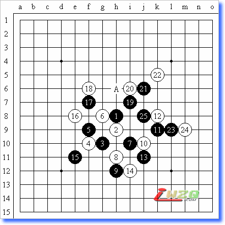

第一届上海棋王战第二局顾炜溪月黑胜葛凌峰
#1 第一届上海棋王战第二局顾炜溪月黑胜葛凌峰 作者：有志青年 发表时间：2008-1-6 16:14:28
（上海消息 通讯员：阿彪）1月5日，第一届上海五子棋棋王战决赛第2局在古滇茶坊继战。葛凌峰七段布局“溪月”，令在座观战者大为吃惊。素有“溪.峡月专家”之称的顾炜八段稍作考虑提出交换。葛凌峰的白4比他的布局更令人惊讶，顾炜给出的黑5的第2打点是三打以外相对平衡的选点。比赛中，顾炜显得有点心不在焉，落子飞快，几乎没有什么考虑，仅仅只是利用先手的优势控制局面而已，毫无主动争斗的精神。葛凌峰则每步深思熟虑，较好地掌握着白棋的行进节奏。进入中盘，白棋的外势渐厚，逐渐主动。白18后，或许是顾炜意识到黑棋再采取消极防御战术恐怕要承受失败的结果，黑19开始主动跳起战斗。白20防御之要点，黑21、23落子很快。葛凌峰经过将近25分钟的长考，下出了实战的白24。顾炜随即下出黑25，一举锁定胜局。局后复盘，葛凌峰对白24非常懊悔，表示实战花费时间最多思考的是A点的变化，但是感觉比较复杂，因此选择了没有经过计算，只是感觉稳妥的防御，落子后才发现黑有简单胜。顾炜表示，最近有些事情，因此心思不在棋上，本来连比赛都可能无法参加；就本局而言，在棋的构思和整体质量上，葛凌峰更胜一筹，只是关键手时随便了；之所以黑21、23走的那么快，是因为根本没有考虑到白24有A点这样的强防，如果实战的白24下在A点，恐怕自己会输，这只是幸运的一局。
目前，顾炜暂时以2分的优势领先。下一局比赛将于1月12日举办，这也将是非常激烈的比赛。究竟第一届上海五子棋棋王是否会诞生，还是葛凌峰会绝地反击，一切都还是个谜。

黑：顾 炜 八段（交换，8分钟）-白：葛凌峰 七段（42分钟）
5A=I7 黑25白投了